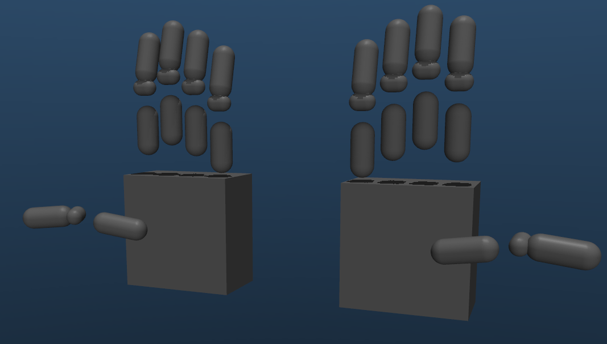

Hand Models
This section covers everything related to the DexHand models in MuJoCo, from model conversion to configuration and usage.
{kind=link}

Left: Original full mesh-based collision geometries. Right: Simplified collision geometries using primitives.
Overview
The DexHand models in MuJoCo are created through a systematic process that involves:
Converting URDF models to MJCF format
Optimizing collision geometries
Configuring actuator properties
Adding sensors and sites
Setting up articulation capabilities
Model Structure
Core Components
Base Link: Provides anchor point for floating base or robot arm attachment
Finger Links: 5 fingers with multiple joints each
Palm Links: Structural components of the palm
Sites: Points of interest for sensors and visualization
Actuators: Position-controlled joints with configurable parameters
Sensors: Touch sensors at fingertips
Collision Geometries: Simplified or full mesh-based
Touch Sensors: MuJoCo native or TaShan 11-dimensional sensors
Available Models
dexhand021_right.xml: Right hand with full collision meshes
dexhand021_left.xml: Left hand with full collision meshes
dexhand021_right_simplified.xml: Right hand with optimized collision geometries
dexhand021_left_simplified.xml: Left hand with optimized collision geometries
dexhand021_right_floating.xml: Right hand with 6-DoF floating base
dexhand021_right_jaka_zu7.xml: Right hand mounted on JAKA Zu7 arm
For details on touch sensors, see Touch Sensors.
You can also check out Articulation for more details on creating custom models by articulating the hand with your own robot arm.
Joint Configuration
Hand Joint Structure
Each finger has multiple joints:
Joint 1: Base rotation/spread (1 DoF)
Joint 2-4: Bending joints (1 DoF each)
Default Joint Ranges
# Bend joints (joints 2-4)
r"[lr]_f_joint[1-5]_[2-4]":
ctrlrange: "0 1.3" # 0 to 1.3 radians
forcerange: "-20 20" # -20 to 20 N
# Base rotation joints
"r_f_joint1_1": # Thumb
ctrlrange: "0 2.2"
"r_f_joint2_1": # Index
ctrlrange: "0 0.3"
"r_f_joint3_1": # Middle
ctrlrange: "-0.0001 0.0001"
"r_f_joint4_1": # Ring
ctrlrange: "0 0.3"
"r_f_joint5_1": # Pinky
ctrlrange: "0 0.6"
Next Steps
The following sections provide detailed information about each aspect of the hand models:
URDF to MJCF Conversion - Converting URDF models to MJCF
Collision Models - Working with collision geometries
Components - Actuators and sensors configuration
Articulation - Attaching hands to other models
Hand Model Examples - Example configurations and use cases
Choose a section based on your needs, or follow them in order for a complete understanding of the hand models.
Common Tasks
Converting a URDF Model
python scripts/convert_hand.py --urdf path/to/hand.urdf
Using Simplified Collisions
python scripts/convert_hand.py --urdf hand.urdf \
--simplified-collision config/collision_geoms/dexhand021_right_simplified.yaml
Attaching to a Robot Arm
python scripts/articulate_hand.py \
--base robot_arm.xml \
--hand dexhand021_right.xml \
--output combined_model.xml \
--euler 0 90 0